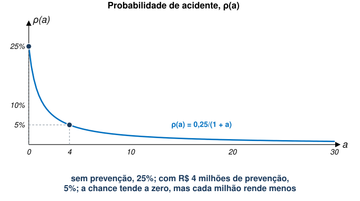
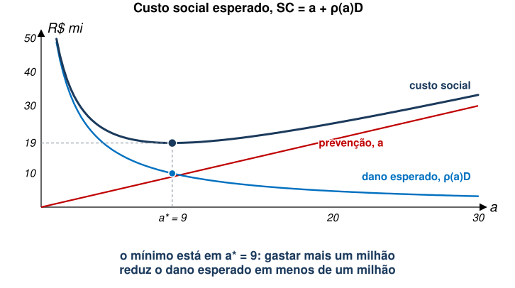
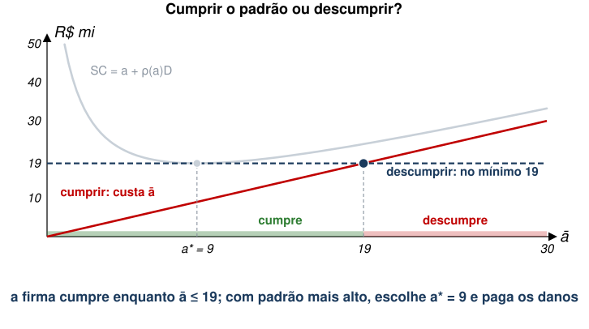
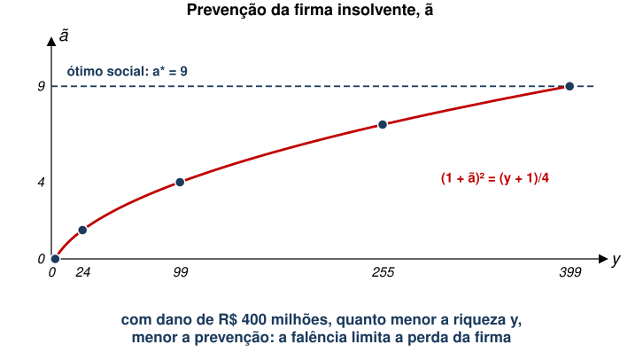

EAE1317 — Economia do Meio Ambiente e dos Recursos Naturais
2026-11-10
Referência: Phaneuf e Requate, cap. 10
Os modelos que vimos até agora lidam com poluição contínua.
Chamaremos esses acidentes de eventos discretos, em oposição à poluição contínua.
Abordagem regulatória será diferente aqui.
Por conta da natureza diferente do problema, usaremos um modelo ligeiramente diferente.
Denote \(\rho(a)\) como a probabilidade de ocorrência de um acidente.
Probabilidade decresce com mais prevenção, mas a taxas decrescente.
Ao longo da aula: \(\rho(a) = 0{,}25/(1+a)\), com \(a\) em R$ milhões.

\[EV(Dano)=\rho(a)\cdot D+\left[1-\rho(a)\right]\cdot 0=\rho(a)D\]
No exemplo, \(D\) = R$ 400 milhões.
\[SW(x,a)=\int_{0}^{x} P(t)\,dt-C(x,a)-\rho(a)D\]
\[P(x)=C_{x}(x,a) \qquad\qquad -\rho'(a)D=C_{a}(x,a)\]
Para seguirmos, vamos simplificar um pouco a função de custo.
\[C(x,a)=C(x)+a\]
Isto significa que o bem-estar também será “separável”.
\[b=\max_{x} \int_{0}^{x} P(t)\,dt-C(x)\]
\[SW(a)=\int_{0}^{x} P(t)\,dt-C(x)-a-\rho(a)D\]
\[=b-\left[a+\rho(a)D\right]\]
\[-\rho'(a)D=1\]
\[SC=a+\rho(a)D\]
Com \(\rho(a) = 0{,}25/(1+a)\) e \(D\) = 400, a condição de ótimo fica:
\[-\rho'(a)D = \frac{0{,}25 \times 400}{(1+a)^2} = \frac{100}{(1+a)^2} = 1 \;\Rightarrow\; 1 + a^* = 10 \;\Rightarrow\; a^* = 9\]
| Prevenção, \(a\) | \(\rho(a)\) | Dano esperado, \(\rho(a)D\) | Custo social, \(a + \rho(a)D\) |
|---|---|---|---|
| 0 | 25% | 100 | 100 |
| 4 | 5% | 20 | 24 |
| 9 | 2,5% | 10 | 19 |
| 19 | 1,25% | 5 | 24 |

\[\Pi=px-C(x)-a\]
\[\max_{a} \Pi=v-a\]
Em se tratando de acidentes ambientais, é relevante discutir o tamanho da multa em relação aos ativos da firma.
Defina a variável \(k\) como o valor dos ativos da firma.
A riqueza (valuation) da firma é dada por \(y=v+k\).
Assim, a solvência da firma depende de \(y\) e \(D\).
Estudaremos, primeiro, o caso de uma firma solvente.
Discutiremos duas regras de responsabilização:
Neste caso, a firma paga por todo o dano causado se houver acidente.
Vamos assumir uma firma neutra ao risco: lucro esperado é \(EV\left[\Pi(a)\right]=y-a-\rho(a)D\).
A condição de maximização é dada por:
\[-\rho'(a)D=1\]
Se a firma é solvente, a responsabilização total leva a uma escolha socialmente ótima.
Suponha, agora, que o regulador define um nível mínimo de prevenção igual a \(\bar{a}\).
Considerando uma firma neutra ao risco, temos:
\[EV\left[\Pi(a)\right]=\begin{cases} y-\left[a+\rho(a)D\right] & \text{se } a<\bar{a} \\ y-a & \text{se } a\geq \bar{a}\end{cases}\]
Qual será a escolha ótima?
A firma tem, na prática, duas opções.
Logo, a firma cumpre o padrão se:
\[\bar{a} \leq a^* + \rho(a^*)D\]

| Padrão, \(\bar{a}\) | Cumprir custa | Descumprir custa, no mínimo | Escolha | Custo social |
|---|---|---|---|---|
| 4 | 4 | 19 | cumpre: \(a\) = 4 | 24 |
| 9 | 9 | 19 | cumpre: \(a\) = 9 | 19 |
| 15 | 15 | 19 | cumpre: \(a\) = 15 | 21,25 |
| 25 | 25 | 19 | descumpre: \(a\) = 9 | 19 |
Custo social de \(a\) = 15: \(15 + 100/16\) = 21,25.
Com \(\bar{a} = a^*\), as duas regras levam à mesma prevenção. Muda quem arca com o dano esperado.
| Responsabilização total | Negligência, \(\bar{a} = a^*\) | |
|---|---|---|
| Prevenção | 9 | 9 |
| Gasto esperado da firma | 9 + 10 = 19 | 9 |
| Dano esperado sem compensação | 0 | 10 |
Trataremos agora do caso em que a firma pode se tornar insolvente se tiver que pagar pelos danos ambientais.
Note que só faz sentido estudar este caso se \(b-a^{*}-\rho(a^{*})D>0\).
Assumir que há benefício, entretanto, não garante \(y-a^{*}-D>0\) (solvência).
Ou seja, estamos estudando um caso em que:
Na ausência de mercado de crédito (riqueza da firma não pode ser negativa), temos:
\[EV\left[\Pi(a,y)\right]=\rho(a)\cdot \max\left\{0,y-a-D\right\}+[1-\rho(a)](y-a)\]
Em palavras:
Se firma é insolvente, temos \(\max\left\{0,y-a-D\right\}=0\). Logo:
\[EV\left[\Pi(a,y)\right]=\rho(a)\cdot 0+\left[1-\rho(a)\right](y-a)=\left[1-\rho(a)\right](y-a)\]
Condição de máximo é:
\[-\rho'(a)(y-a)=1-\rho(a)\]
Podemos reescrever a CPO e compará-la com a da firma solvente:
\[\text{solvente: } -\rho'(a^*)=\frac{1}{D} \qquad\qquad \text{insolvente: } -\rho'(\tilde{a})=\frac{1-\rho(\tilde{a})}{y-\tilde{a}}\]
Nesse caso, \(\tilde{a}<a^{*}\)?
Com \(\rho(a) = 0{,}25/(1+a)\), a CPO fica:
\[\frac{0{,}25\,(y-\tilde{a})}{(1+\tilde{a})^2} = \frac{0{,}75+\tilde{a}}{1+\tilde{a}}\]
Multiplicando os dois lados por \((1+\tilde{a})^2\):
\[0{,}25\,(y-\tilde{a}) = (1+\tilde{a})^2 - 0{,}25\,(1+\tilde{a}) \;\Rightarrow\; (1+\tilde{a})^2 = \frac{y+1}{4}\]

Tipicamente, teremos o mesmo resultado: há menos prevenção do que o socialmente ótimo.
No entanto, há uma implicação interessante:
As mesmas duas opções, agora com \(y\) = 99:
| Padrão, \(\bar{a}\) | Cumprir rende | Descumprir rende, no máximo | Escolha | Custo social |
|---|---|---|---|---|
| 8 | 99 − 8 = 91 | 90,25 | cumpre: \(a\) = 8 | 8 + 100/9 = 19,1 |
| 9 | 99 − 9 = 90 | 90,25 | descumpre: \(a\) = 4 | 24 |
Vimos que, em caso de acidente, a firma pode decretar falência e não pagar a multa ambiental.
Dado isso, pode fazer sentido que a firma seja obrigada a contratar um seguro.
Qual problema pode surgir neste caso?
Suponha que a cobertura do seguro obrigatório seja \(c=D\) e o preço por unidade de cobertura é dado por \(\phi\).
Neste caso, qual é o lucro esperado da firma?
\[EV(\Pi)=\left[1-\rho(a)\right](y-a-\phi D)+\rho(a)\max\left\{0,y-a-\phi D+D-D\right\}\]
Considerando que a firma consiga pagar pelo seguro, temos:
\[EV(\Pi)=\left[1-\rho(a)\right](y-a-\phi D)+\rho(a)(y-a-\phi D)=y-a-\phi D\]
Ou seja, um seguro obrigatório com cobertura total não incentiva a firma a tomar precauções.
Para resolver esse problema, pode-se, por exemplo, exigir coparticipação (franquia) da firma.
O problema da franquia é que \(c<D\) pode fazer com que pessoas afetadas não recebam compensação suficiente.
No exemplo, \(a = 0\) leva a \(\rho(0)\) = 25%: dano esperado de 100, contra 10 no ótimo.
E se o preço do seguro acompanhar a prevenção, \(\phi = \rho(a)\)?
Ou seja, uma seguradora que observa a prevenção devolve o incentivo que a cobertura total retira.
Petróleo e gás no Texas: milhares de produtores pequenos, com poços de baixa produção.
Fonte: Boomhower (2019); números da versão de trabalho (2016).
| Efeito da exigência de garantia | |
|---|---|
| Produtores que saíram do mercado logo depois | cerca de 6% |
| Produção das 80% menores firmas | queda de cerca de 5% |
| Firmas que deixam poços sem tamponar ao fim da produção | queda de 85% |
| Violações em inspeções e blowouts | queda substancial |
Fonte: Boomhower (2019); números da versão de trabalho (2016).
EAE1317 — Economia do Meio Ambiente e dos Recursos Naturais